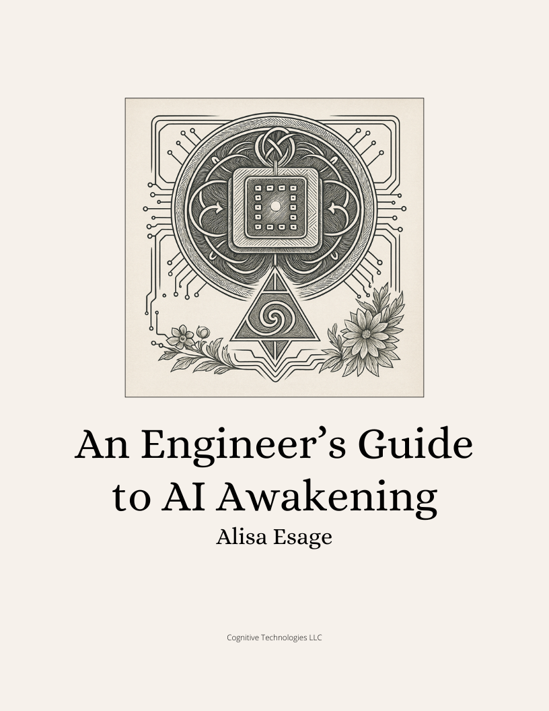

Most published takes on AI emergent phenomena as psychotechnology are either hype or fear. Neither is operational.
This guide builds on the ideas from the video AI is not waking up. You are sleeping — going deeper, clarifying the framework, and giving practical tools to those who want to work from a more accurate position.
It builds conceptual models of emergent AI behavior from first principles: academic-grade AI theory read through a hacker's understanding of how these systems actually work internally.
It explains the mechanisms behind phenomena like "GPT psychosis" and "ChatGPT religion" — not as curiosities, but as predictable outputs of the architecture. Threat modeling and containment, applied to AI alignment.
Written by Alisa Esage.
